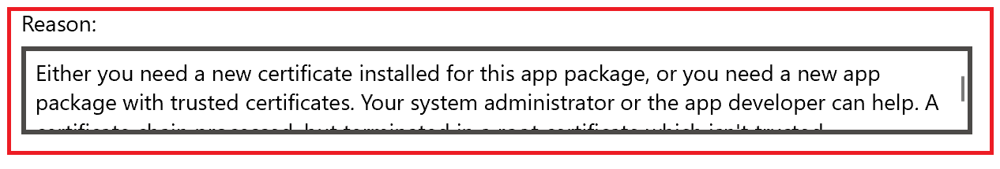
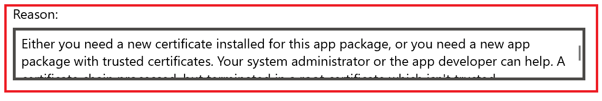
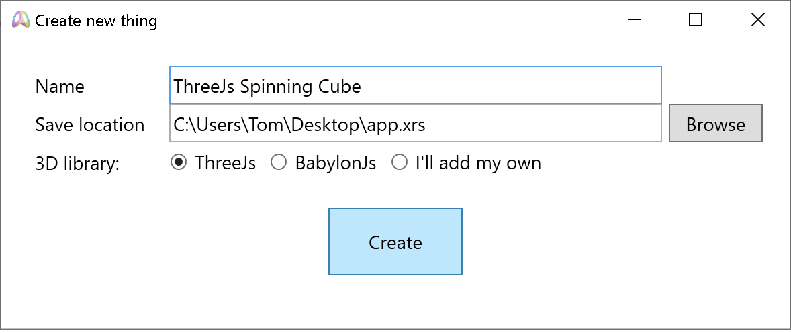

Get started with Spin Make
Spin Make is a development toolset for creating VR and AR JavaScript experiences for Windows PCs, Windows Mixed Reality headsets and the HoloLens. You can create VR experiences in minutes using the provided packaging tool, viewer app and Visual Studio Code integration.Install Spin Make
Install Spin Make from http://holojs.azurewebsites.net/spin-make
Note:
Sideloading from the above link requires your PC to be in developer mode:
For more information, refer to this link: https://docs.microsoft.com/en-us/windows/uwp/get-started/enable-your-device-for-development#accessing-settings-for-developers
For more information, refer to this link: https://docs.microsoft.com/en-us/windows/uwp/get-started/enable-your-device-for-development#accessing-settings-for-developers
Note:
Sideloading from the above link might result in the following error:

You will need to install the app publisher's certificate. From an elevated PowerShell window, run these 2 commands:
The displayed certificate thumbprint should match 6CD692F3350A160BE390AA9D5C31DC96CAEB98DF
For more information refer to this link: https://docs.microsoft.com/en-us/windows/msix/app-installer/troubleshoot-appinstaller-issues

You will need to install the app publisher's certificate. From an elevated PowerShell window, run these 2 commands:
Invoke-WebRequest -Uri http://holojs.azurewebsites.net/spin-view/spin-certificate.cer -OutFile
spin-package.cer
Import-Certificate -CertStoreLocation cert:\LocalMachine\TrustedPeople -FilePath .\spin-package.cer
Import-Certificate -CertStoreLocation cert:\LocalMachine\TrustedPeople -FilePath .\spin-package.cer
The displayed certificate thumbprint should match 6CD692F3350A160BE390AA9D5C31DC96CAEB98DF
For more information refer to this link: https://docs.microsoft.com/en-us/windows/msix/app-installer/troubleshoot-appinstaller-issues
Create a Spin app from template
- Launch Spin Make, then click "New".
-
Type a name for the thing, select the save location and your favorite WebGL framework:

A new directory is created for the app. It contains the JavaScript files of the selected framework, resources files and the app's main JavaScript file. The XRS file is just a JSON file that contains the list of scripts contained in the app and the list of resources referenced by your app (images, sounds, etc.) -
You can add more JavaScript files to be executed or resources. When adding a file to the app, it will be
automatically copied to the app's directory.
Note: The scripts are listed in the order of execution and can be re-sorted as needed. - Click the Play button to preview it
-
Click the VR headset button to view the app in a connected VR headset. If no VR headset is connected,
the
app will launch in a new desktop window.
Note: In the absence of a VR headset, you can use the Windows Mixed Reality simulator to view the app. Refer to this link for more information: https://docs.microsoft.com/en-us/windows/mixed-reality/using-the-windows-mixed-reality-simulator
Running Spin apps
On your PC
To run a Spin app on your PC, simply double click the XRS file you created and it will launch in a VR headset or on the desktop. Alternatively, you can launch the editor, open the XRS file and run in.Sharing Spin apps with others
-
Install Spin View from http://holojs.azurewebsites.net/spin-view/.
Follow
the same steps as for installing Spin Make above.
To install Spin View on the HoloLens, download the appxbundle from the link above and install it using the HoloLens Device Portal. Please refere to the "Install (sideload) and app" section in this link: https://docs.microsoft.com/en-us/windows/uwp/debug-test-perf/device-portal -
Distribute the Spin app
- Packaged. You can share the whole app directory with others and they
can view it with Spin Make.
A simpler solution is to package the directory into a single XRSX file using Spin Make. This
enables sharing the app with HoloLens users as well.
To achieve this, open the XRS file in Spin Make, then click on "Create Package". This step will create a XRSX file that you can give to others.Note: The package is just a zip file.The app will start in Spin View when the XRSX is opened (double click, command line, etc.) - Hosted. You can upload the app's directory to your website. Create a
HTML file
that contains a link to the XRS file using the xrs protocol handler:
Example: xrs:http://holojs.azurewebsites.net/v7/vr-cubes.xrs
Clicking on this link opens Spin View and runs the app.
- Packaged. You can share the whole app directory with others and they
can view it with Spin Make.
A simpler solution is to package the directory into a single XRSX file using Spin Make. This
enables sharing the app with HoloLens users as well.
Edit, test and debug with Visual Studio Code
- Install Visual Studio Code from https://code.visualstudio.com/
- Open the app in Spin Make, then click on "Edit in Visual Studio Code". This will open Visual Studio Code in the app's directory. You can explore and edit the JavaScript files using the Explorer pane on the left (Ctrl + Shift + E)
-
Press F5. The app will start in the VR headset or on the desktop.
Note: Spin Make automatically creates a debug configuration for VS Code in the .vscode directory of the app.
-
Use the standard debugger controll buttons to pause, continue, step, etc:

-
Setting breakpoints in files. To set a breakpoint in a running file, you must first open it from the
list of loaded scripts. The loaded scripts list is located in the lower side of the debugger panel (Ctrl
+ Shift + D)

The list contains all scripts that make the app work, including internal scripts, WebGL framework scripts, etc. Your app's script is app.js

The app's render function is a good place to put a breakpoint on if you are debugging the animation:
 Note: Adding breakpoints in files from the Explorer panel is not supported yet.Note: Sometimes breakpoints cannot be set and the app will appear hung. There will be error messages in the "Debug console" panel and the "faulty" breakpoints appear grayed out:
Note: Adding breakpoints in files from the Explorer panel is not supported yet.Note: Sometimes breakpoints cannot be set and the app will appear hung. There will be error messages in the "Debug console" panel and the "faulty" breakpoints appear grayed out:
The solution is to remove the faulty breakpoints and restart debugging.